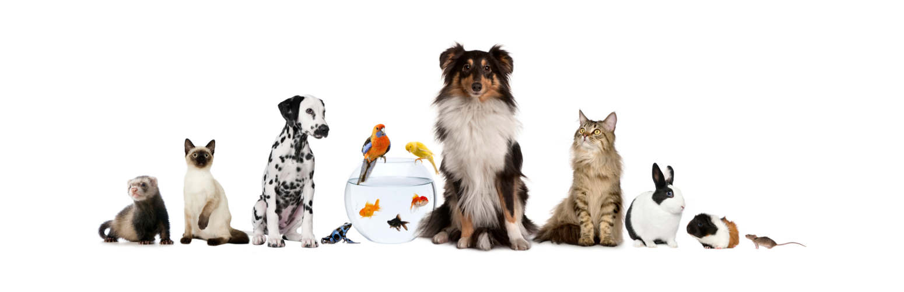

Peluqueria canina

La salud del animal también debe pasar por un control de la salud capilar, verificando la ausencia de dematopatías como seborreas, prurito o piodermas. Somos fanáticos de la salud integral de las mascotas y disponemos de peluquería canina con el champú adecuado para cada tipo de piel, tratando con champús medicamentosos en los casos que lo requieran como parte de un plan integral de salud animal. Nuesto lema es: "Cuidado y salud sin prisas", cada animal requiere su tiempo y debe pasar por las manos de nuestra peluquera llevándose un grato recuerdo de la experiencia de forma que la próxima visita la hará sin miedos y con confianza.
Es importante destacar que la peluquería canina no solo es importante para mantener el aspecto físico del perro, sino también para su salud y bienestar. Un pelaje limpio y bien cuidado ayuda a prevenir problemas de piel y elimina la acumulación de suciedad y bacterias. Es necesario solicitar cita previa. 
NUESTROS SERVICIOS DE BAÑO INCLUYEN:
Revisión del estado de la piel y valoración.
Comprobación del estado de la piel, con ello valoraremos si el cuero cabelludo es apto para trabajarlo.
Asesoramiento sobre estilismos.
Adaptamos el corte de pelo a la morfología del mismo, lo que buscamos es lograr un equilibrio entre belleza y salud.
Eliminación de pelo de muda.
Retirada el pelo ya maduro para que evitar que caiga en casa (perros con mucho subpelo es necesario deslanarlos para favorecer la muda de pelo)
Corte de uñas.
Revisamos sus uñas y si fuera necesario las cortamos. Cosmética y acabados con productos PSH Aplicación de champús y cremas PSH, adaptados a cada tipo de pelo o necesidades de la piel.
Secado.
Secamos a tu perro siguiendo una estricta seguridad.
Limpieza de oídos.
Revisamos los oídos de tu perro, los limpiamos y desodorizamos.
Recortes higiénicos.
Rasurado de barriga, zona urinaria, trasero, vaciado de pelo y redondeo en pies, recortes en cabeza, higiene del lagrimal.